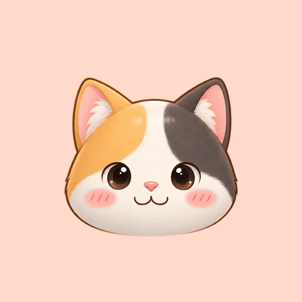
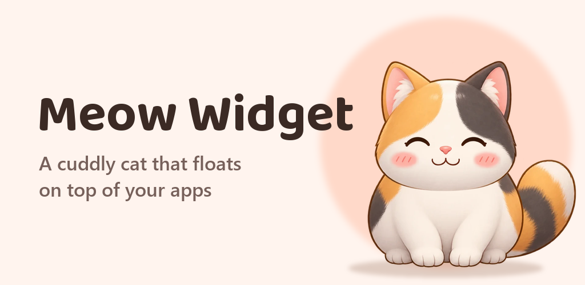
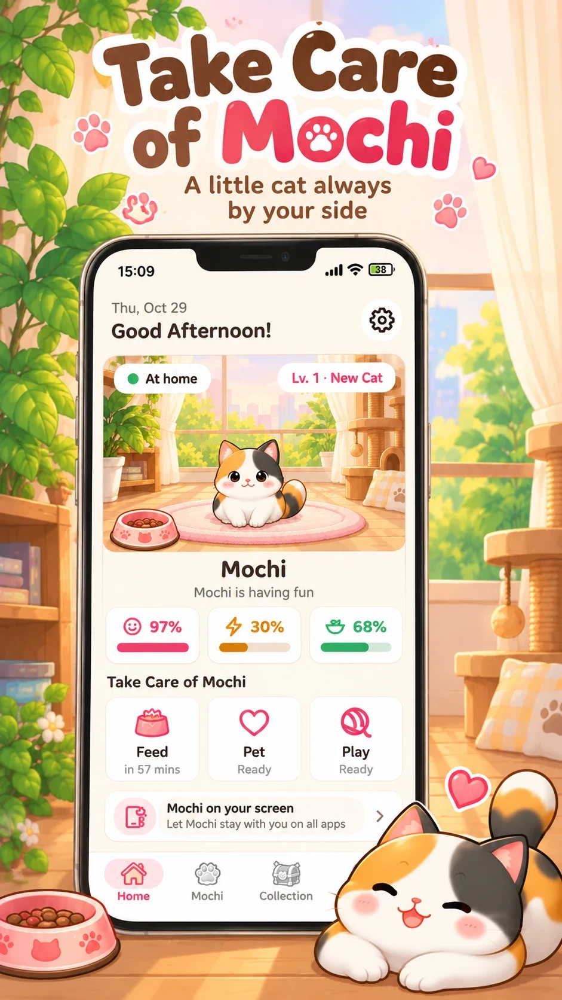
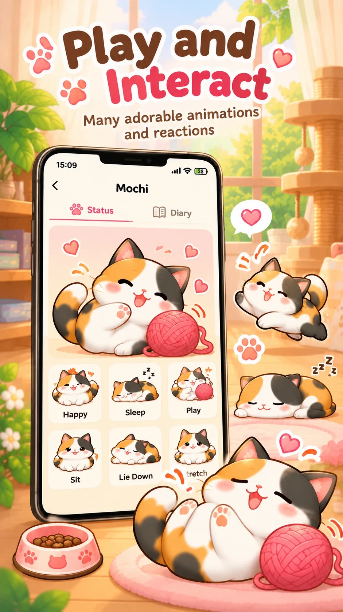

Meow Widget
A cuddly calico cat to look after, who can float above your other apps and keep you company.

Features
- Feed, pet and play with your cat a little every day; its mood, energy and fullness follow how you care for it.
- Tap it to play, stroke its back and it leans into your finger, purrs and sends up hearts.
- Friendship levels that grow with every bit of care, from "New friend" to "Soulmate", and a diary of meals, pets, play and outings.
- Now and then your cat heads out for a stroll and brings you back a gift.
- Its room changes through the day: living room in the morning, desk in the afternoon, balcony at sunset, bedroom at night.
- Floating mode: your cat sits in a corner of the screen above any app. Hold it to move it, drop it on ✕ to send it home, double-tap it to open the app.
- Three sizes and adjustable transparency, an occasional walk along the screen, meows and purrs with quiet hours at night.
- Optional reminders when your cat is hungry, and a backup file to bring your cat to a new phone.
- English, Vietnamese, Japanese, Simplified Chinese and French.
- No account and no ad tracking; your cat and its name stay on your phone. Only anonymous usage statistics and crash reports are sent, and you can turn both off in Settings.

